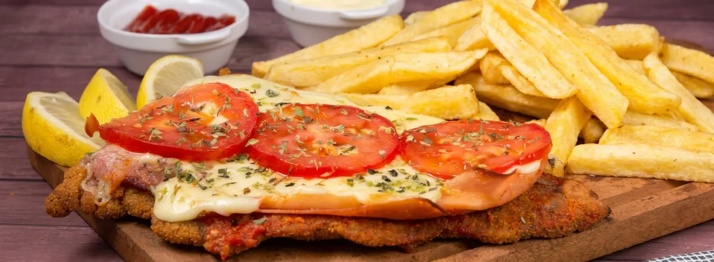
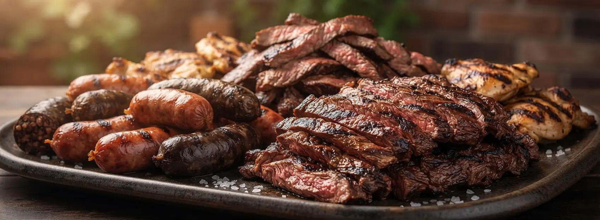
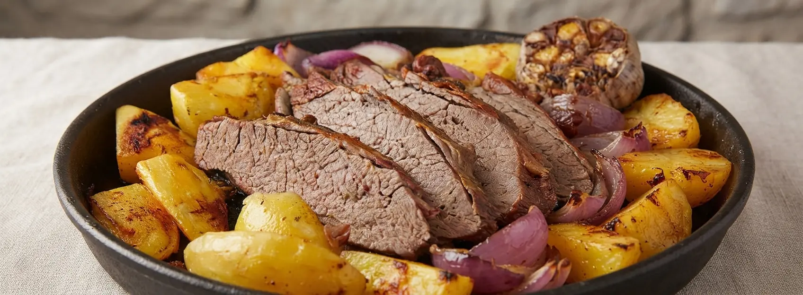
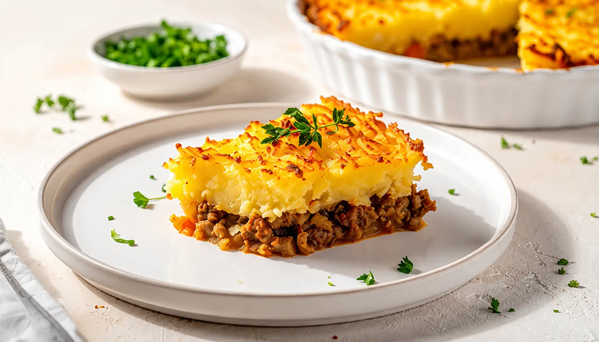
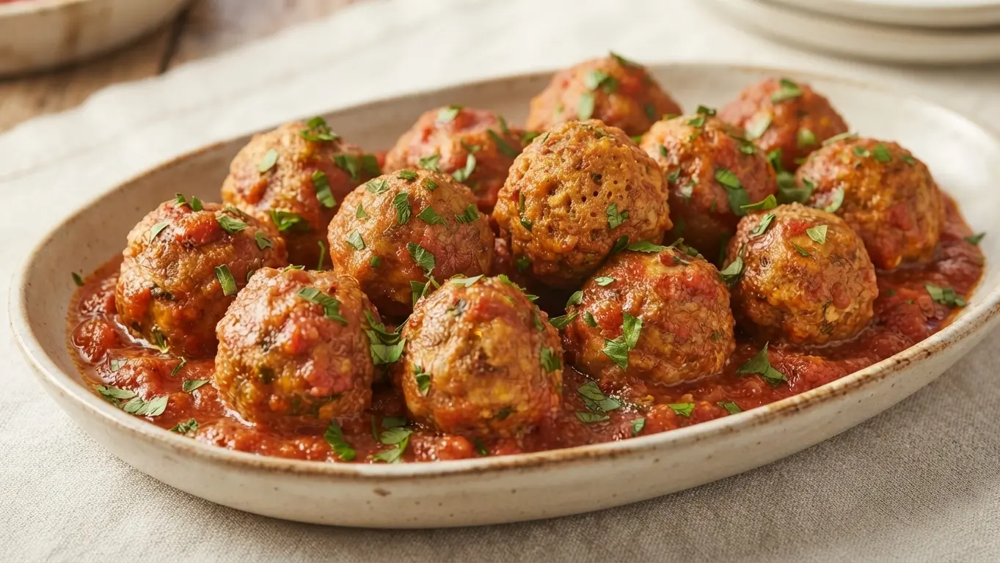
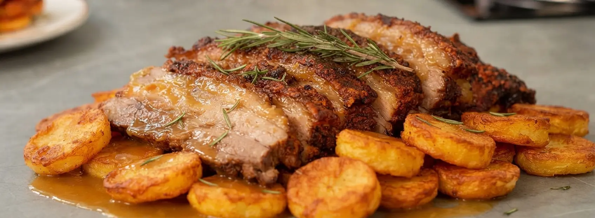
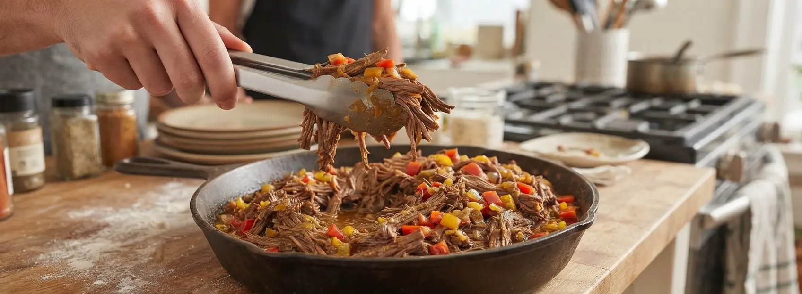
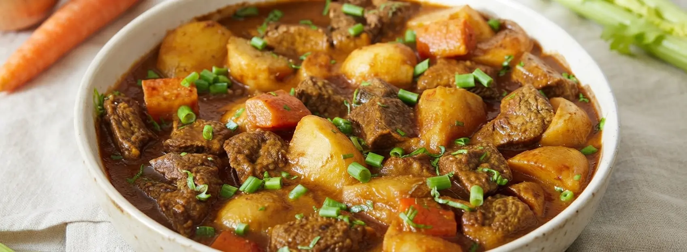
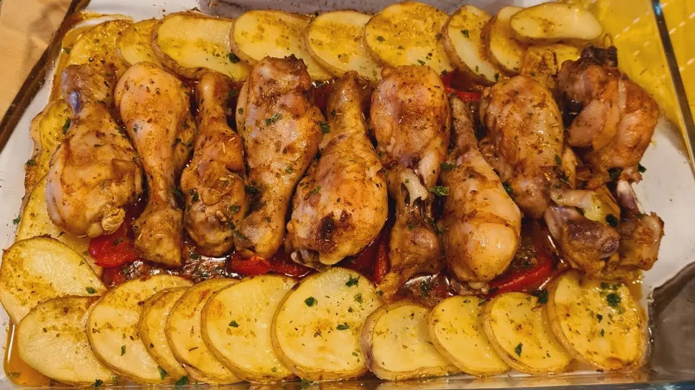

MILANESA NAPOLITANA
Historia de la Milanesa Napolitana
La milanesa napolitana es uno de los platos más representativos de la cocina argentina. A pesar de su nombre, no nació en Nápoles, sino que surgió en Buenos Aires como una adaptación de la tradicional milanesa. La preparación consiste en una milanesa cubierta con salsa de tomate, jamón y queso, que luego se lleva al horno hasta gratinar. Con el tiempo se convirtió en un clásico de bodegones y hogares argentinos.
Ingredientes (2 porciones)
| Ingrediente | Cantidad |
|---|---|
| Milanesas de carne | 2 unidades |
| Jamón cocido | 2 fetas |
| Mozzarella | 150 g |
| Salsa de tomate | 150 ml |
| Pan rallado | 100 g |
| Huevo | 1 unidad |
| Sal y pimienta | A gusto |
| Aceite | Cantidad necesaria |
Paso a paso
- Condimentar las milanesas con sal y pimienta.
- Pasarlas por huevo batido y luego por pan rallado.
- Cocinar las milanesas al horno o freírlas hasta que estén doradas.
- Colocar las milanesas en una fuente para horno.
- Cubrir cada una con salsa de tomate y una feta de jamón.
- Agregar la mozzarella por encima.
- Llevar al horno a 200°C durante 10 minutos aproximadamente, hasta que el queso esté completamente derretido y gratinado.
- Servir inmediatamente.

MILANESA CLÁSICA
Historia de la Milanesa Clásica
La milanesa es una preparación profundamente incorporada a la cocina argentina, aunque sus raíces se encuentran en las tradiciones europeas. Su nombre se relaciona con la cotoletta alla milanese italiana, una preparación de carne empanada. En Argentina se popularizó utilizando principalmente carne vacuna y se convirtió en una de las comidas caseras más tradicionales y versátiles del país.
Ingredientes (2 porciones)
| Ingrediente | Cantidad |
|---|---|
| Bifes de carne | 2 unidades |
| Huevos | 2 unidades |
| Pan rallado | 150 g |
| Ajo | 1 diente |
| Perejil | 1 cucharada |
| Sal y pimienta | A gusto |
| Aceite | Cantidad necesaria |
Paso a paso
- Condimentar los bifes con sal y pimienta.
- Batir los huevos junto con el ajo y el perejil picados.
- Pasar la carne por la mezcla de huevo.
- Rebozar completamente con pan rallado.
- Dejar reposar las milanesas unos minutos para que el empanado se adhiera.
- Cocinar en aceite caliente hasta que estén doradas de ambos lados.
- También pueden cocinarse al horno a 200°C hasta que estén doradas.
- Escurrir el exceso de aceite y servir.

BIFE DE CHORIZO
Historia del Bife de Chorizo
El bife de chorizo es uno de los cortes más reconocidos de la gastronomía argentina. Se caracteriza por ser un corte grueso y tierno, muy asociado a las parrillas y restaurantes del país. Su popularidad está estrechamente relacionada con la tradición argentina de consumir carne vacuna y con la importancia cultural del asado como forma de reunión y celebración.
Ingredientes (2 porciones)
| Ingrediente | Cantidad |
|---|---|
| Bife de chorizo | 2 unidades |
| Sal gruesa | A gusto |
| Pimienta | A gusto |
| Aceite | 1 cucharada |
Paso a paso
- Retirar la carne de la heladera y dejarla reposar unos minutos.
- Condimentar ambos lados con sal gruesa y pimienta.
- Calentar una parrilla o plancha a temperatura alta.
- Colocar los bifes y cocinar aproximadamente 4 a 6 minutos por lado, dependiendo del punto deseado.
- Retirar del fuego y dejar reposar durante unos minutos.
- Servir inmediatamente.

ASADO
Historia del Asado
El asado es una de las preparaciones más representativas de la cultura argentina. Su historia está relacionada con la tradición ganadera de las pampas y con la costumbre de cocinar diferentes cortes de carne sobre brasas. Más que una comida, el asado se convirtió en una forma de reunión familiar y social, transmitida de generación en generación.
Ingredientes (4 porciones)
| Ingrediente | Cantidad |
|---|---|
| Asado de tira | 1,5 kg |
| Vacío | 1 kg |
| Chorizos | 4 unidades |
| Sal gruesa | A gusto |
| Carbón o leña | Cantidad necesaria |
Paso a paso
- Preparar las brasas utilizando carbón o leña.
- Salar la carne con sal gruesa.
- Distribuir las brasas debajo de la parrilla.
- Colocar primero los cortes que necesiten mayor tiempo de cocción.
- Cocinar lentamente, controlando la temperatura de las brasas.
- Dar vuelta la carne cuando esté dorada por el lado inferior.
- Agregar los chorizos durante la cocción.
- Retirar la carne cuando alcance el punto deseado y dejar reposar unos minutos antes de servir.

VACÍO AL HORNO
Historia del Vacío al Horno
El vacío es uno de los cortes de carne vacuna más utilizados en la cocina argentina y es especialmente conocido por formar parte de los asados. Su preparación al horno es una alternativa práctica para cocinar este corte en casa, permitiendo obtener una carne tierna y sabrosa mediante una cocción lenta acompañada de diferentes condimentos y vegetales.
Ingredientes (4 porciones)
| Ingrediente | Cantidad |
|---|---|
| Vacío | 1,5 kg |
| Ajo | 3 dientes |
| Aceite | 2 cucharadas |
| Pimentón | 1 cucharadita |
| Sal y pimienta | A gusto |
| Agua | 100 ml |
Paso a paso
- Precalentar el horno a 180°C.
- Condimentar el vacío con sal, pimienta y pimentón.
- Mezclar el aceite con el ajo picado y untar la carne.
- Colocar el vacío en una fuente para horno y agregar el agua.
- Cubrir con papel aluminio y cocinar durante aproximadamente 1 hora y media.
- Retirar el aluminio y continuar la cocción durante 20 a 30 minutos hasta que la superficie esté dorada.
- Dejar reposar unos minutos y cortar en porciones.

MATAMBRE ARROLLADO
Historia del Matambre Arrollado
El matambre arrollado es una preparación tradicional de la cocina argentina que suele estar presente en celebraciones, reuniones familiares y mesas festivas. El corte de matambre se rellena con distintos ingredientes, se enrolla y se cocina hasta que queda firme. Al cortarse en rodajas, permite observar el relleno en su interior, convirtiéndose también en una preparación muy atractiva para servir fría.
Ingredientes (6 porciones)
| Ingrediente | Cantidad |
|---|---|
| Matambre vacuno | 1,5 kg |
| Zanahoria | 2 unidades |
| Morrón rojo | 1 unidad |
| Huevos duros | 3 unidades |
| Ajo | 2 dientes |
| Perejil | 2 cucharadas |
| Sal y pimienta | A gusto |
| Hilo de cocina | Cantidad necesaria |
Paso a paso
- Extender el matambre sobre una superficie limpia y condimentarlo.
- Distribuir el ajo y el perejil picados.
- Colocar la zanahoria, el morrón y los huevos duros sobre la carne.
- Enrollar firmemente desde uno de los extremos.
- Atar con hilo de cocina para mantener la forma.
- Cocinar en agua hirviendo con sal durante aproximadamente 2 horas.
- Retirar y colocar bajo peso hasta que se enfríe.
- Quitar el hilo, cortar en rodajas y servir.

MATAMBRE A LA PIZZA
Historia del Matambre a la Pizza
El matambre a la pizza es una preparación que combina dos elementos profundamente asociados a la gastronomía argentina: la carne vacuna y los sabores de la pizza. El matambre se cocina hasta quedar tierno y luego se cubre con salsa de tomate, queso y diferentes ingredientes. Es una preparación muy popular en parrillas y reuniones familiares.
Ingredientes (4 porciones)
| Ingrediente | Cantidad |
|---|---|
| Matambre | 1 kg |
| Salsa de tomate | 300 ml |
| Mozzarella | 300 g |
| Orégano | A gusto |
| Sal y pimienta | A gusto |
Paso a paso
- Limpiar el exceso de grasa del matambre.
- Condimentar con sal y pimienta.
- Cocinar el matambre en horno a 180°C durante aproximadamente 1 hora y media, hasta que esté tierno.
- Retirar y cubrir con salsa de tomate.
- Agregar la mozzarella y espolvorear con orégano.
- Llevar nuevamente al horno hasta que el queso esté derretido y dorado.
- Cortar en porciones y servir caliente.

PASTEL DE PAPA
Historia del Pastel de Papa
El pastel de papa es un plato muy arraigado en la cocina argentina y rioplatense. Su preparación está relacionada con diferentes pasteles de carne europeos, entre ellos el shepherd's pie británico. En Argentina se adaptó utilizando carne vacuna, cebolla, morrón, huevo duro y puré de papa. Se convirtió en un plato casero, económico y rendidor, muy presente en los hogares del país.
Ingredientes (4 porciones)
| Ingrediente | Cantidad |
|---|---|
| Papas | 1 kg |
| Leche | 150 ml |
| Manteca | 50 g |
| Carne picada | 500 g |
| Cebolla | 1 unidad |
| Morrón rojo | 1/2 unidad |
| Huevos duros | 2 unidades |
| Sal, pimienta y pimentón | A gusto |
Paso a paso
- Hervir las papas en agua con sal hasta que estén blandas.
- Escurrirlas y preparar un puré agregando manteca, leche y sal.
- Picar la cebolla y el morrón y cocinarlos en una sartén.
- Agregar la carne picada y cocinar hasta que esté dorada.
- Condimentar con sal, pimienta y pimentón.
- Colocar una capa de carne en una fuente para horno.
- Agregar los huevos duros picados.
- Cubrir completamente con el puré de papa.
- Hornear a 200°C durante 20 a 25 minutos hasta que la superficie esté dorada.

ALBÓNDIGAS CON SALSA
Historia de las Albóndigas con Salsa
Las albóndigas son una preparación presente en numerosas culturas gastronómicas y llegaron a la cocina argentina principalmente a través de la influencia europea. La versión con carne vacuna y salsa de tomate se convirtió en una comida familiar muy popular. Pueden acompañarse con pasta, arroz, puré de papas o pan.
Ingredientes (4 porciones)
| Ingrediente | Cantidad |
|---|---|
| Carne picada | 500 g |
| Pan rallado | 50 g |
| Huevo | 1 unidad |
| Cebolla | 1 unidad |
| Ajo | 1 diente |
| Salsa de tomate | 500 ml |
| Orégano | A gusto |
| Sal y pimienta | A gusto |
Paso a paso
- Mezclar la carne picada con el huevo, pan rallado, ajo y condimentos.
- Formar pequeñas bolas con la mezcla.
- Dorar las albóndigas en una sartén con un poco de aceite.
- Retirar las albóndigas y cocinar la cebolla picada en la misma sartén.
- Agregar la salsa de tomate y condimentar.
- Incorporar nuevamente las albóndigas.
- Cocinar a fuego bajo durante 20 minutos aproximadamente.
- Servir con pasta, arroz o puré de papas.

CARNE AL HORNO CON PAPAS
Historia de la Carne al Horno con Papas
La carne al horno con papas es una preparación clásica de la cocina familiar argentina. Su popularidad se debe a la facilidad para cocinar carne y guarnición en una misma fuente. La combinación de carne vacuna con papas doradas y condimentos sencillos permite obtener un plato abundante y tradicional, ideal para almuerzos familiares.
Ingredientes (4 porciones)
| Ingrediente | Cantidad |
|---|---|
| Carne para horno | 1 kg |
| Papas | 1 kg |
| Ajo | 2 dientes |
| Aceite | 3 cucharadas |
| Pimentón | 1 cucharadita |
| Sal y pimienta | A gusto |
Paso a paso
- Precalentar el horno a 200°C.
- Condimentar la carne con sal, pimienta y pimentón.
- Untar la carne con aceite y ajo picado.
- Pelar las papas y cortarlas en trozos medianos.
- Colocar la carne y las papas en una fuente para horno.
- Cocinar durante aproximadamente 60 minutos, girando la carne a mitad de cocción.
- Retirar cuando la carne esté cocida y las papas doradas.
- Dejar reposar unos minutos y servir.

CARNE DESMECHADA
Historia de la Carne Desmechada
La carne desmechada es una preparación tradicional de la cocina casera que utiliza una cocción lenta para lograr que la carne quede tierna y absorba los sabores de las verduras y condimentos. Es un plato asociado a la cocina familiar y a las comidas de invierno, especialmente por su carácter abundante y reconfortante.
Ingredientes (4 porciones)
| Ingrediente | Cantidad |
|---|---|
| Carne vacuna | 1 kg |
| Cebolla | 2 unidades |
| Zanahoria | 2 unidades |
| Morrón | 1 unidad |
| Tomate triturado | 400 g |
| Caldo | 500 ml |
| Aceite | 2 cucharadas |
| Sal y pimienta | A gusto |
Paso a paso
- Cortar la carne en trozos grandes y condimentar.
- Calentar aceite en una cacerola y dorar la carne por todos sus lados.
- Retirar la carne y cocinar la cebolla, zanahoria y morrón.
- Agregar el tomate triturado.
- Incorporar nuevamente la carne y agregar el caldo.
- Tapar y cocinar a fuego bajo durante aproximadamente 1 hora y media.
- Controlar la cocción y agregar caldo si fuera necesario.
- Servir la carne con la salsa y las verduras.

ESTOFADO DE CARNE
Historia del Estofado de Carne
El estofado es una técnica de cocción lenta utilizada en diferentes gastronomías del mundo. En Argentina se incorporó a la cocina familiar mediante la influencia europea y se convirtió en una preparación muy habitual durante los meses fríos. La cocción prolongada permite que la carne quede tierna y que la salsa adquiera un sabor intenso.
Ingredientes (4 porciones)
| Ingrediente | Cantidad |
|---|---|
| Carne vacuna | 800 g |
| Cebolla | 1 unidad |
| Zanahoria | 1 unidad |
| Salsa de tomate | 500 ml |
| Caldo | 300 ml |
| Ajo | 2 dientes |
| Laurel | 1 hoja |
| Sal y pimienta | A gusto |
Paso a paso
- Cortar la carne en trozos medianos.
- Dorar la carne en una olla con aceite caliente.
- Agregar la cebolla, zanahoria y ajo picados.
- Incorporar la salsa de tomate y el caldo.
- Agregar el laurel y condimentar.
- Tapar y cocinar a fuego bajo durante aproximadamente 1 hora y media.
- Remover ocasionalmente y controlar que la preparación no se quede sin líquido.
- Servir caliente acompañado de pasta, arroz o puré.

POLLO AL HORNO CON PAPAS
Historia del Pollo al Horno con Papas
El pollo al horno con papas es uno de los platos más populares de la cocina casera argentina. Su preparación se relaciona con las tradiciones europeas de asar aves junto con vegetales. En Argentina se convirtió especialmente en un clásico de los almuerzos familiares y de los domingos, gracias a su sencillez, rendimiento y facilidad de preparación.
Ingredientes (2 porciones)
| Ingrediente | Cantidad |
|---|---|
| Pollo | 2 unidades |
| Papas | 4 unidades |
| Ajo | 2 dientes |
| Aceite de oliva | 2 cucharadas |
| Sal | A gusto |
| Pimienta | A gusto |
| Pimentón | A gusto |
Paso a paso
- Precalentar el horno a 200°C.
- Mezclar el aceite, ajo picado, pimentón, sal y pimienta.
- Untar el pollo con la mezcla.
- Pelar y cortar las papas y colocarlas en una bandeja.
- Disponer el pollo sobre las papas.
- Hornear durante 60 a 75 minutos, hasta que el pollo esté bien cocido y dorado.
- Bañar el pollo con sus jugos durante la cocción.
- Dejar reposar unos minutos antes de servir.

POLLO A LA MOSTAZA
Historia del Pollo a la Mostaza
El pollo acompañado con mostaza es una preparación difundida en distintas cocinas europeas y occidentales. La combinación de carne de pollo con el sabor ligeramente ácido y picante de la mostaza permite crear una salsa intensa y cremosa. Actualmente es una preparación muy utilizada en la cocina familiar por su sencillez y rapidez.
Ingredientes (2 porciones)
| Ingrediente | Cantidad |
|---|---|
| Pechuga de pollo | 2 unidades |
| Mostaza | 2 cucharadas |
| Crema de leche | 150 ml |
| Cebolla | 1/2 unidad |
| Aceite | 1 cucharada |
| Sal y pimienta | A gusto |
Paso a paso
- Cortar las pechugas en filetes o trozos medianos.
- Condimentar con sal y pimienta.
- Dorar el pollo en una sartén con aceite y reservar.
- Cocinar la cebolla picada hasta que esté transparente.
- Agregar la mostaza y la crema de leche.
- Incorporar nuevamente el pollo.
- Cocinar a fuego bajo durante 10 minutos.
- Servir caliente acompañado de arroz, papas o verduras.
POLLO AL LIMÓN
Historia del Pollo al Limón
El pollo al limón combina la suavidad de la carne de pollo con la acidez y frescura del limón. Esta combinación aparece en diferentes tradiciones culinarias y se adaptó a numerosos estilos de cocina. Es una preparación sencilla que permite obtener un plato aromático y liviano utilizando pocos ingredientes.
Ingredientes (2 porciones)
| Ingrediente | Cantidad |
|---|---|
| Pechugas de pollo | 2 unidades |
| Limón | 2 unidades |
| Ajo | 2 dientes |
| Aceite de oliva | 2 cucharadas |
| Orégano | 1 cucharadita |
| Sal y pimienta | A gusto |
Paso a paso
- Condimentar las pechugas con sal, pimienta y orégano.
- Calentar el aceite en una sartén.
- Dorar el pollo de ambos lados.
- Agregar el ajo picado y el jugo de los limones.
- Cocinar a fuego medio durante 10 a 15 minutos.
- Bañar el pollo con la salsa durante la cocción.
- Retirar cuando esté completamente cocido y servir.

POLLO A LA CREMA
Historia del Pollo a la Crema
El pollo con crema es una preparación difundida especialmente en la cocina occidental. Su popularidad se debe a la combinación de una carne suave con una salsa cremosa que puede complementarse con diferentes vegetales y condimentos. En la cocina familiar se convirtió en una alternativa sencilla para preparar un plato abundante y sabroso.
Ingredientes (2 porciones)
| Ingrediente | Cantidad |
|---|---|
| Pechuga de pollo | 2 unidades |
| Crema de leche | 200 ml |
| Cebolla | 1/2 unidad |
| Queso parmesano | 50 g |
| Manteca | 20 g |
| Sal y pimienta | A gusto |
Paso a paso
- Cortar las pechugas en filetes.
- Condimentar con sal y pimienta.
- Dorar el pollo en una sartén con manteca.
- Retirar el pollo y cocinar la cebolla picada.
- Agregar la crema de leche y el queso parmesano.
- Incorporar nuevamente el pollo.
- Cocinar a fuego bajo durante aproximadamente 10 minutos.
- Servir caliente acompañado de pasta, arroz o papas.

POLLO SALTEADO CON VERDURAS
Historia del Pollo Salteado con Verduras
El salteado es una técnica de cocción utilizada en diferentes cocinas del mundo, especialmente en Asia. La combinación de pollo y verduras permite preparar una comida rápida y versátil, utilizando diferentes vegetales y condimentos. Su popularidad se relaciona con la rapidez de cocción y la posibilidad de adaptar los ingredientes disponibles.
Ingredientes (2 porciones)
| Ingrediente | Cantidad |
|---|---|
| Pechuga de pollo | 300 g |
| Morrón | 1 unidad |
| Zanahoria | 1 unidad |
| Cebolla | 1 unidad |
| Brócoli | 150 g |
| Salsa de soja | 2 cucharadas |
| Aceite | 2 cucharadas |
| Sal y pimienta | A gusto |
Paso a paso
- Cortar el pollo en tiras pequeñas.
- Cortar todas las verduras en tiras o trozos pequeños.
- Calentar el aceite en una sartén grande.
- Dorar el pollo durante unos minutos.
- Agregar las verduras comenzando por las que necesitan más tiempo de cocción.
- Saltear a fuego fuerte hasta que las verduras estén cocidas pero todavía firmes.
- Incorporar la salsa de soja y mezclar.
- Condimentar y servir inmediatamente.

HAMBURGUESAS CASERAS
Historia de las Hamburguesas Caseras
La hamburguesa moderna se desarrolló a partir de diferentes tradiciones culinarias relacionadas con la carne picada. Su nombre está vinculado con la ciudad alemana de Hamburgo, aunque su popularización mundial ocurrió posteriormente en Estados Unidos. En Argentina se convirtió en una comida muy popular y se adaptó a la cocina casera utilizando carne vacuna y diferentes ingredientes para acompañarla.
Ingredientes (4 hamburguesas)
| Ingrediente | Cantidad |
|---|---|
| Carne picada | 500 g |
| Cebolla | 1/2 unidad |
| Ajo | 1 diente |
| Pan rallado | 2 cucharadas |
| Huevo | 1 unidad |
| Sal y pimienta | A gusto |
| Pan de hamburguesa | 4 unidades |
Paso a paso
- Colocar la carne picada en un recipiente.
- Agregar la cebolla y el ajo picados.
- Incorporar el huevo, pan rallado, sal y pimienta.
- Mezclar hasta integrar todos los ingredientes.
- Dividir la preparación en cuatro porciones y formar las hamburguesas.
- Cocinar en una plancha o sartén caliente durante aproximadamente 4 a 5 minutos por lado.
- Servir en panes de hamburguesa con los ingredientes deseados.

CARNE SALTEADA ESTILO ORIENTAL
Historia de la Carne Salteada Estilo Oriental
Los salteados de carne y verduras son característicos de distintas cocinas asiáticas. La técnica consiste en cocinar rápidamente los ingredientes a alta temperatura, manteniendo parte de su textura. Esta preparación combina carne vacuna con verduras y salsa de soja, dando como resultado un plato de sabores intensos y de rápida elaboración.
Ingredientes (2 porciones)
| Ingrediente | Cantidad |
|---|---|
| Carne vacuna | 400 g |
| Morrón | 1 unidad |
| Cebolla | 1 unidad |
| Zanahoria | 1 unidad |
| Salsa de soja | 3 cucharadas |
| Ajo | 1 diente |
| Jengibre | 1 cucharadita |
| Aceite | 2 cucharadas |
Paso a paso
- Cortar la carne en tiras finas.
- Cortar las verduras en tiras.
- Calentar el aceite en una sartén grande o wok.
- Dorar la carne a fuego fuerte.
- Agregar el ajo y el jengibre.
- Incorporar las verduras y saltear rápidamente.
- Agregar la salsa de soja y mezclar.
- Cocinar unos minutos más y servir caliente.

BONDIOLA AL HORNO
Historia de la Bondiola al Horno
La bondiola de cerdo es un corte muy utilizado en la gastronomía argentina, especialmente en parrillas y preparaciones de cocción lenta. Su contenido de grasa ayuda a mantener la carne jugosa durante la cocción. Preparada al horno, puede acompañarse con diferentes condimentos, verduras o salsas, convirtiéndose en una alternativa abundante para reuniones familiares.
Ingredientes (4 porciones)
| Ingrediente | Cantidad |
|---|---|
| Bondiola de cerdo | 1 kg |
| Ajo | 3 dientes |
| Mostaza | 2 cucharadas |
| Miel | 1 cucharada |
| Aceite | 2 cucharadas |
| Pimentón | 1 cucharadita |
| Sal y pimienta | A gusto |
| Agua | 150 ml |
Paso a paso
- Precalentar el horno a 180°C.
- Mezclar la mostaza, miel, aceite, ajo picado y pimentón.
- Condimentar la bondiola con sal y pimienta.
- Untar toda la superficie con la mezcla de mostaza.
- Colocar la bondiola en una fuente y agregar el agua.
- Cubrir con papel aluminio y cocinar durante aproximadamente 1 hora y media.
- Retirar el aluminio y continuar la cocción durante 20 a 30 minutos, hasta que esté dorada.
- Dejar reposar unos minutos, cortar en rodajas y servir.